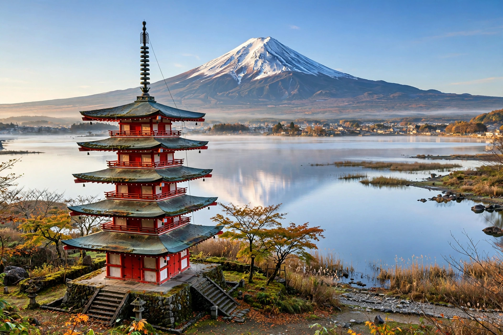

日本
日本は、東アジアに位置する島国で、首都は東京です。人口は約1億2千万人で、本州、北海道、九州、四国など多くの島々からなります。

[Image: 日本の地図と富士山]
地理と歴史
日本は環太平洋造山帯にあり、山地が多く地震や火山活動も活発です。歴史は古代の律令国家から武家政権、明治維新、第二次世界大戦後の復興と経済成長へと続きます。
政治と文化
立憲君主制と議院内閣制をとり、天皇は国の象徴です。伝統文化と現代のポップカルチャーの両方で世界的に知られています。
日本は、東アジアに位置する島国で、首都は東京です。人口は約1億2千万人で、本州、北海道、九州、四国など多くの島々からなります。

日本は環太平洋造山帯にあり、山地が多く地震や火山活動も活発です。歴史は古代の律令国家から武家政権、明治維新、第二次世界大戦後の復興と経済成長へと続きます。
立憲君主制と議院内閣制をとり、天皇は国の象徴です。伝統文化と現代のポップカルチャーの両方で世界的に知られています。